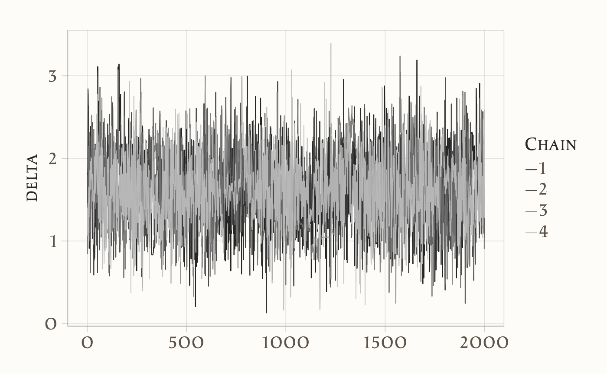

here::here("code", "_common.R") |> source()
# Carichiamo i pacchetti necessari
if (!requireNamespace("pacman")) install.packages("pacman")
pacman::p_load(cmdstanr, posterior, insight, bayesplot, ggplot2)20 Modelli con più di un parametro
Introduzione
In molte situazioni statistiche ci troviamo di fronte a modelli che includono più parametri incogniti. Tuttavia, non tutti questi parametri hanno lo stesso rilievo interpretativo: spesso l’interesse dell’analisi si concentra su uno o pochi di essi, mentre gli altri, pur essendo indispensabili per descrivere correttamente i dati, vengono considerati secondari. Questi ultimi prendono il nome di parametri di disturbo (nuisance parameters).
L’obiettivo di un’analisi bayesiana è in genere quello di ottenere la distribuzione marginale a posteriori dei parametri di interesse. Per farlo, esistono due strategie. La prima consiste nel calcolare la distribuzione congiunta a posteriori di tutti i parametri e successivamente integrare, in modo analitico o numerico, rispetto a quelli di disturbo. Si tratta di un metodo formalmente corretto, ma spesso poco praticabile: nei modelli realistici l’integrazione può diventare estremamente complessa.
La seconda strategia, oggi la più diffusa, sfrutta le tecniche di simulazione. Attraverso il campionamento MCMC (Markov Chain Monte Carlo) è possibile generare campioni dalla distribuzione congiunta a posteriori e, in fase di analisi, focalizzarsi solo sui parametri di interesse, ignorando i campioni relativi a quelli di disturbo. Questo approccio ha il vantaggio di essere facilmente applicabile anche in modelli complessi, dove l’integrazione analitica sarebbe impraticabile.
In questo capitolo prenderemo in esame un esempio concreto che illustra il ruolo dei parametri di interesse e di quelli di disturbo. Immaginiamo uno studio che valuti l’efficacia di un intervento cognitivo, come un programma di training per la memoria di lavoro. Il nostro scopo sarà stimare la differenza nei punteggi medi di un test tra il gruppo che ha ricevuto l’intervento e quello di controllo. Le capacità cognitive di base dei partecipanti, pur influenzando i punteggi, non sono l’oggetto centrale dell’indagine: saranno dunque trattate come parametri di disturbo. Attraverso la marginalizzazione, potremo concentrare l’attenzione sull’effetto dell’intervento, mantenendo al tempo stesso la complessità necessaria per una descrizione realistica dei dati.
Panoramica del capitolo
- Comprendere il concetto di parametri di disturbo e il loro ruolo nei modelli statistici.
- Simulare dati che includono sia parametri di interesse sia parametri di disturbo.
- Specificare un modello bayesiano in Stan per stimare l’effetto di un intervento cognitivo.
- Ottenere la distribuzione a posteriori del parametro di interesse marginalizzando i parametri di disturbo.
- Interpretare i risultati in termini psicologici, collegandoli all’efficacia dell’intervento.
20.1 Stima dell’effetto di un intervento cognitivo sui punteggi dei test
Immaginiamo di voler valutare l’efficacia di un programma di potenziamento cognitivo, ad esempio un training progettato per migliorare la memoria di lavoro. Per testarne l’impatto, dividiamo i partecipanti in due gruppi: il primo riceve l’intervento, mentre il secondo funge da gruppo di controllo. L’obiettivo principale è stimare la differenza nei punteggi medi dei test tra i due gruppi dopo l’intervento.
È chiaro, tuttavia, che i punteggi non dipendono unicamente dall’intervento. Essi riflettono anche le differenze individuali nelle capacità cognitive di base, i diversi livelli di motivazione e altri fattori casuali o di misurazione. Se ignorassimo questa complessità, rischieremmo di attribuire impropriamente all’intervento effetti che in realtà derivano da caratteristiche individuali.
Per questo motivo, distinguiamo tra parametri di interesse e parametri di disturbo. La differenza tra le medie dei due gruppi, \(\delta = \mu_1 - \mu_2\), rappresenta il cuore dell’analisi: è il parametro che quantifica l’effetto medio dell’intervento. Le abilità cognitive individuali dei partecipanti, indicate con \(\theta_j\), e la variabilità residua dei punteggi, rappresentata da \(\sigma_y\), vengono invece considerate parametri di disturbo. Pur non essendo oggetto diretto dell’indagine, essi sono indispensabili per costruire un modello realistico e per isolare correttamente l’effetto dell’intervento.
Il modello assume che il punteggio di ciascun partecipante \(y_{ij}\) derivi dalla combinazione di due componenti: un effetto di gruppo, che riflette l’appartenenza al gruppo di intervento o di controllo, e un effetto individuale, che cattura le differenze nelle capacità cognitive di base. Formalmente, i punteggi sono distribuiti normalmente con media \(\mu_i + \theta_j\) e varianza \(\sigma_y^2\). In questo quadro, \(\mu_1\) e \(\mu_2\) descrivono i punteggi medi dei due gruppi, \(\theta_j\) rappresenta la deviazione di ciascun individuo rispetto al valore atteso in base al gruppo, mentre \(\sigma_y\) esprime la variabilità residua non spiegata.
In Stan, questo modello viene implementato nel seguente modo:
# Imposta il percorso al file Stan
stan_file <- file.path(here("stan", "nuisance_params_model.stan"))
# Compila il modello
model <- cmdstan_model(stan_file)data {
int<lower=0> N1; // Number of participants in group 1 (intervention)
int<lower=0> N2; // Number of participants in group 2 (control)
array[N1] real y1; // Test scores for group 1
array[N2] real y2; // Test scores for group 2
}
parameters {
real mu1; // Mean test score for group 1
real mu2; // Mean test score for group 2
real<lower=0> sigma_y; // Standard deviation of test scores
real<lower=0> sigma_theta; // Standard deviation of baseline cognitive ability
array[N1 + N2] real theta; // Baseline cognitive abilities for all participants
}
model {
// Priors
mu1 ~ normal(0, 10);
mu2 ~ normal(0, 10);
sigma_y ~ normal(0, 5);
sigma_theta ~ normal(0, 5);
for (j in 1 : (N1 + N2)) {
theta[j] ~ normal(0, sigma_theta); // Random effects for baseline abilities
}
// Likelihood
for (j in 1 : N1) {
y1[j] ~ normal(mu1 + theta[j], sigma_y);
}
for (j in 1 : N2) {
y2[j] ~ normal(mu2 + theta[N1 + j], sigma_y);
}
}
generated quantities {
real delta = mu1 - mu2; // Difference in means
}La specificazione del modello chiarisce quindi che il punteggio osservato di ciascun partecipante è la somma di un effetto comune al gruppo di appartenenza e di un effetto individuale. Il parametro di interesse, \(\delta\), emerge come differenza tra le medie dei due gruppi, mentre i parametri individuali \(\theta_j\) e la variabilità residua \(\sigma_y\) fungono da variabili di supporto: non sono il focus dell’analisi, ma permettono di tener conto della complessità reale dei dati.
Esaminiamo ora più da vicino la struttura del modello Stan, che traduce formalmente quanto discusso finora. I partecipanti sono suddivisi in due gruppi: il Gruppo 1 (intervento), che ha seguito il programma cognitivo, e il Gruppo 2 (controllo), che non lo ha ricevuto. Ognuno di essi fornisce un punteggio al test, e il modello assume che questo punteggio sia influenzato da due componenti principali: un effetto legato al gruppo di appartenenza e un effetto legato alle caratteristiche individuali.
La componente di gruppo descrive la tendenza media dei partecipanti a seconda del gruppo a cui appartengono. In Stan, essa viene rappresentata da due parametri, \(\mu_1\) e \(\mu_2\), che corrispondono rispettivamente alla media del gruppo di intervento e a quella del gruppo di controllo. La differenza tra queste due medie, \(\delta = \mu_1 - \mu_2\), è il parametro di interesse, perché quantifica l’effetto medio dell’intervento cognitivo.
Accanto a questo effetto, il modello include una componente individuale, che cattura le differenze tra i partecipanti. Ogni individuo possiede infatti abilità cognitive di base che non sono direttamente osservabili ma che influenzano le sue prestazioni. Queste abilità vengono modellate come effetti casuali, \(\theta_j\), che rappresentano deviazioni individuali rispetto al valore atteso in base al gruppo. In Stan, i \(\theta_j\) sono trattati come parametri distribuiti normalmente attorno a zero, con deviazione standard \(\sigma_\theta\), che misura la variabilità delle abilità cognitive di base nella popolazione.
Oltre a questi termini, il modello prevede anche un parametro \(\sigma_y\), che rappresenta la variabilità residua nei punteggi dei test. Questo termine raccoglie tutte le fonti di variazione non spiegate dall’appartenenza al gruppo o dalle abilità cognitive individuali, come ad esempio errori di misurazione o fluttuazioni momentanee nella prestazione.
Dal punto di vista bayesiano, \(\theta_j\) e \(\sigma_y\) sono considerati parametri di disturbo: non sono il focus dell’analisi, ma sono necessari per rendere il modello realistico. La loro presenza ci consente di stimare in maniera corretta l’effetto dell’intervento, evitando di confondere differenze individuali o errori casuali con un effetto sistematico del trattamento.
L’obiettivo finale è stimare la distribuzione a posteriori di \(\delta\), la differenza tra le medie dei due gruppi. Per farlo, non occorre calcolare direttamente l’integrazione rispetto ai parametri di disturbo: grazie al campionamento MCMC, possiamo ottenere campioni dalla distribuzione congiunta di tutti i parametri e, in fase di analisi, concentrare l’attenzione solo su \(\delta\). In questo senso, i parametri di disturbo vengono “marginalizzati” automaticamente, lasciandoci l’informazione essenziale sul parametro di interesse.
In sintesi, il modello Stan traduce in termini formali un’idea intuitiva: i punteggi dei partecipanti possono essere spiegati come la somma di un effetto di gruppo (dovuto all’intervento o al controllo) e di un effetto individuale (dovuto alle abilità cognitive di base). L’analisi bayesiana ci permette di isolare l’effetto dell’intervento tenendo conto di queste differenze individuali, e di quantificare l’incertezza associata alla stima.
20.1.1 Dati
Per comprendere meglio il funzionamento del modello, è utile partire da una simulazione. In questo modo possiamo controllare i parametri “veri” che generano i dati e verificare se il modello bayesiano è in grado di recuperarli in fase di stima. L’idea è quella di creare due gruppi di partecipanti, uno che ha ricevuto l’intervento e uno di controllo, attribuendo a ciascun gruppo un punteggio medio atteso diverso. A questi valori aggiungiamo sia la variabilità individuale, legata alle abilità cognitive di base, sia una componente di rumore residuo, che riflette errori di misurazione e altri fattori non osservati.
Nella simulazione, fissiamo la media “vera” dei punteggi a 10 per il gruppo di intervento e a 8 per il gruppo di controllo. Le abilità cognitive di base di ciascun partecipante vengono generate da una distribuzione normale centrata su zero, mentre la variabilità residua nei punteggi è controllata da una deviazione standard comune a entrambi i gruppi. In questo modo otteniamo un campione di dati che riflette sia le differenze tra i gruppi sia l’eterogeneità individuale dei partecipanti.
Il codice seguente mostra come generare i dati e prepararli per l’analisi in Stan:
# Imposta il seme per la riproducibilità
set.seed(42)
# Parametri della simulazione
N1 <- 50 # Numero di partecipanti nel gruppo 1 (intervento)
N2 <- 50 # Numero di partecipanti nel gruppo 2 (controllo)
mu1_true <- 10 # Media "vera" dei punteggi test per il gruppo 1
mu2_true <- 8 # Media "vera" dei punteggi test per il gruppo 2
sigma_y_true <- 2 # Deviazione standard "vera" dei punteggi test
sigma_theta_true <- 1 # Deviazione standard "vera" delle abilità cognitive di base
# Simulazione delle abilità cognitive di base per tutti i partecipanti
theta <- rnorm(N1 + N2, mean = 0, sd = sigma_theta_true)
# Simulazione dei punteggi test per il gruppo 1 (intervento)
y1 <- rnorm(N1, mean = mu1_true + theta[1:N1], sd = sigma_y_true)
# Simulazione dei punteggi test per il gruppo 2 (controllo)
y2 <- rnorm(N2, mean = mu2_true + theta[(N1 + 1):(N1 + N2)], sd = sigma_y_true)
# Creazione della lista per Stan
stan_data <- list(
N1 = N1,
N2 = N2,
y1 = y1,
y2 = y2
)
# Output dei dati simulati per verifica
glimpse(stan_data)
#> List of 4
#> $ N1: num 50
#> $ N2: num 50
#> $ y1: num [1:50] 13.77 11.52 8.36 14.33 9.07 ...
#> $ y2: num [1:50] 8.24 4.11 11.91 8.1 7.15 ...Questi dati costituiscono la base su cui applicheremo il modello bayesiano: sappiamo in partenza che la differenza “vera” tra le medie dei due gruppi è pari a 2, e potremo verificare se l’inferenza basata sul campionamento MCMC riesce a recuperare questo valore entro la distribuzione a posteriori di \(\delta\).
20.1.2 Campionamento e Sintesi della Distribuzione a Posteriori
Una volta simulati i dati e definito il modello in Stan, possiamo passare alla fase centrale dell’analisi: il campionamento dalla distribuzione a posteriori. Questo passaggio permette di stimare i parametri del modello non come singoli valori puntuali, ma come distribuzioni che riflettono l’incertezza delle nostre inferenze.
fit <- model$sample(
data = stan_data,
iter_warmup = 2000,
iter_sampling = 2000,
seed = 123,
refresh = 0
)L’algoritmo MCMC genera catene di valori simulati per ciascun parametro del modello. Per verificarne la qualità, una prima ispezione utile è il traceplot, che mostra l’andamento delle catene e permette di controllare la loro stabilità e la convergenza.
# Traceplot per i parametri di interesse
mcmc_trace(as_draws_array(fit$draws(c("delta"))))
Un traceplot ben miscelato, senza trend o pattern evidenti, indica che le catene stanno esplorando in maniera efficace lo spazio dei parametri. Nel nostro caso, ciò significa che stiamo ottenendo campioni affidabili della distribuzione a posteriori di \(\delta\), cioè della differenza tra le medie dei due gruppi.
Dopo l’ispezione visiva, possiamo sintetizzare numericamente i risultati ottenuti.
fit$summary(variables = c("delta"))
#> # A tibble: 1 × 10
#> variable mean median sd mad q5 q95 rhat ess_bulk ess_tail
#> <chr> <dbl> <dbl> <dbl> <dbl> <dbl> <dbl> <dbl> <dbl> <dbl>
#> 1 delta 1.613 1.606 0.440 0.454 0.914 2.337 1.009 677.927 2598.255Il sommario restituisce alcune informazioni chiave: la media a posteriori, che rappresenta la stima centrale di \(\delta\); gli intervalli di credibilità, che quantificano l’incertezza della stima; e gli indici diagnostici, che ci rassicurano sulla correttezza del campionamento.
Poiché i dati sono stati simulati con una differenza reale tra i due gruppi pari a 2 punti, possiamo confrontare questo valore con la distribuzione a posteriori ottenuta. Se il modello funziona correttamente, la stima media di \(\delta\) dovrebbe essere vicina a 2 e gli intervalli di credibilità dovrebbero includere questo valore. In questo modo, la simulazione conferma che l’approccio bayesiano è in grado di recuperare il parametro di interesse anche in presenza di variabilità individuale e di parametri di disturbo.
Riflessioni conclusive
L’analisi svolta in questo capitolo ha mostrato come, in un contesto bayesiano, sia possibile distinguere tra parametri di interesse e parametri di disturbo, concentrandosi sui primi senza trascurare la complessità introdotta dai secondi. Nel nostro esempio, l’obiettivo era stimare l’effetto medio di un intervento cognitivo, espresso dalla differenza \(\delta\) tra le medie dei due gruppi. Per farlo, abbiamo incluso nel modello anche le abilità cognitive individuali e la variabilità residua, che pur non essendo il fulcro dell’analisi, erano necessarie per rappresentare fedelmente la generazione dei dati.
L’approccio seguito è strettamente legato a quello dei modelli gerarchici. Entrambi, infatti, riconoscono che le differenze individuali non sono un dettaglio trascurabile, ma una componente strutturale dei dati. Nei modelli gerarchici, questa visione è incorporata fin dall’inizio, attraverso una struttura che lega in modo esplicito i diversi livelli di variazione (tra gruppi, tra individui, entro individuo). La marginalizzazione, invece, mette in evidenza il processo attraverso cui i parametri di disturbo vengono “integrati via” a posteriori, lasciando al centro della scena solo il parametro di interesse.
In termini pratici, i due approcci conducono a risultati simili per quanto riguarda la stima di \(\delta\), ma differiscono nella prospettiva: la marginalizzazione è una tecnica mirata a isolare il parametro di interesse, mentre i modelli gerarchici offrono un quadro più generale e flessibile, capace di estendersi facilmente a strutture di dati più complesse. Questo spiega perché, nella ricerca psicologica, i modelli gerarchici siano oggi particolarmente diffusi: permettono di incorporare nuove fonti di variazione, di modellare la dipendenza tra osservazioni e di affrontare in modo naturale dati annidati o longitudinali.
Il messaggio principale è che l’approccio bayesiano ci consente di stimare parametri di interesse come l’effetto di un intervento cognitivo senza ignorare i fattori che contribuiscono alla variabilità dei dati. I parametri di disturbo non sono un ostacolo, ma parte integrante della modellizzazione: anche se non vengono interpretati direttamente, sono fondamentali per garantire che l’inferenza sul parametro centrale — in questo caso \(\delta\) — sia solida e attendibile.
Punti chiave
- Nei modelli complessi non tutti i parametri hanno lo stesso rilievo: alcuni, come le abilità cognitive individuali, sono parametri di disturbo che servono a rendere il modello realistico ma non sono il focus dell’analisi.
- L’approccio bayesiano consente di stimare i parametri di interesse marginalizzando quelli di disturbo: la distribuzione a posteriori di \(\delta\) tiene conto dell’incertezza complessiva senza bisogno di calcoli analitici complicati.
- I modelli gerarchici rappresentano un’estensione naturale di questa logica, poiché incorporano strutture multilivello che rendono l’analisi più flessibile e adatta a dati psicologici complessi.
- Considerare esplicitamente la variabilità individuale permette di ottenere stime più attendibili dell’effetto di un intervento e di interpretare i dati con maggiore rigore.
Bibliografia
Gelman, A., Carlin, J. B., Stern, H. S., Dunson, D. B., Vehtari, A., & Rubin, D. B. (2013). Bayesian Data Analysis (3rd ed.). Chapman; Hall/CRC.